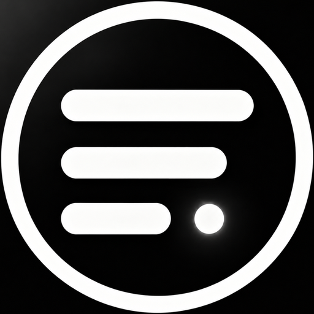

App only
macOS license. No AI minutes. Add credits when a job needs them.

entendu. DownloadWorkflow
Pricing · the short version
Once 1,500 AI minutes included Lifetime app license Refill anytime
If you prefer a smaller bite
macOS license. No AI minutes. Add credits when a job needs them.
App + 500 AI minutes. After the app, minutes work out to $0.080/min.
App + 1,500 AI minutes. Translation, QA, captions, the full pipeline.
7-day trial with 50 AI minutes — full pipeline.
À la carte · captions $0.02 / QA $0.08 / translate $0.20 / min · full pipeline $0.30
Download · macOS 26.1+ · Apple Silicon & Intel
Try the full pipeline for seven days on a real source. When you're ready, buy a lifetime license from inside the app.
Release notes
Initial macOS release · macOS 26.1+